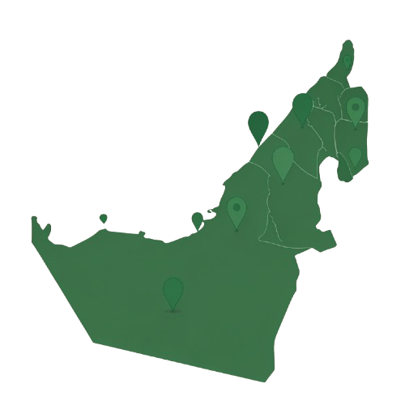

A growing microbiome resource built for the UAE.
Diverse. Representative. Future-ready.
Data collected from all 7 emirates
High-quality microbiome samples
Palm • Finger • Forearm
Representing the rich diversity of the UAE
High-throughput 16S rRNA sequencing
Explore our anonymized microbiome dataset.
| Sample ID | Body Site | Emirate | Gender | Nationality | Bacterial Species (Relative Abundance %) | ||||
|---|---|---|---|---|---|---|---|---|---|
| Staphylococcus epidermidis | Corynebacterium spp. | Cutibacterium acnes | Micrococcus luteus | … | |||||

Palm
Finger
Forearm

Nationalities
Uniting communities through science
All data is anonymized and stored securely. We are committed to ethical research and protecting the privacy of every participant.